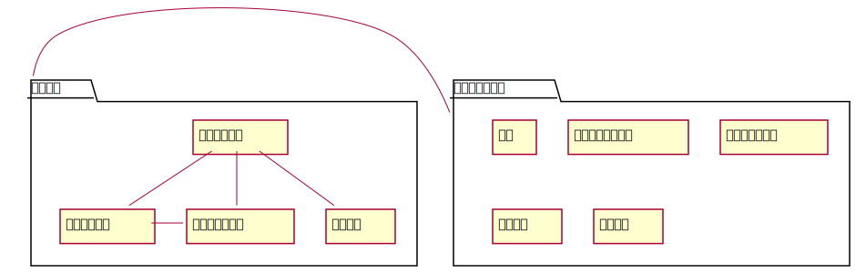
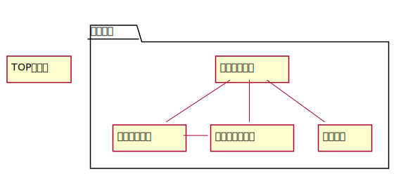

画面一覧・画面遷移図
画面一覧
| 画面ID. | 画面名 | URL | 概要・コンテンツ |
|---|---|---|---|
| sc1 | TOPページ | /top | アプリ紹介(非ログイン時トップリダイレクト) |
| sc2 | ユーザー詳細 | /@userId | ユーザーの詳細(ログイン時トップリダイレクト) |
| sc3 | フォロー一覧 | /@userID/follow | そのユーザーのフォロー一覧 |
| sc4 | フォロワー一覧 | /@userID/follower | そのユーザーのフォロワーの一覧 |
| sc5 | タグ一覧 | /tag/tagname | タグを登録しているユーザーの一覧 |
| sc6 | 通知 | /nortification | 通知 |
| sc7-1 | プロフィール設定 | /settings/profile | プロフィール設定 |
| sc7-2 | アカウント設定 | /settings/account | アカウント設定 |
| sc7-3 | 通知設定 | /settings/nortification | 通知設定 |
| sc7-4 | 表示設定 | /settings/customize | 表示(デザイン)設定 |
| sc8 | ヘルプ | /help | マニュアル |
画面遷移図
ログイン済み

非ログイン時
通常時
